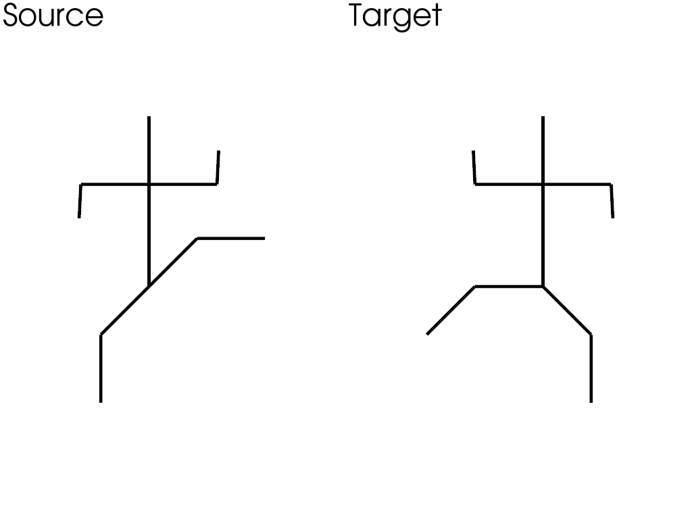
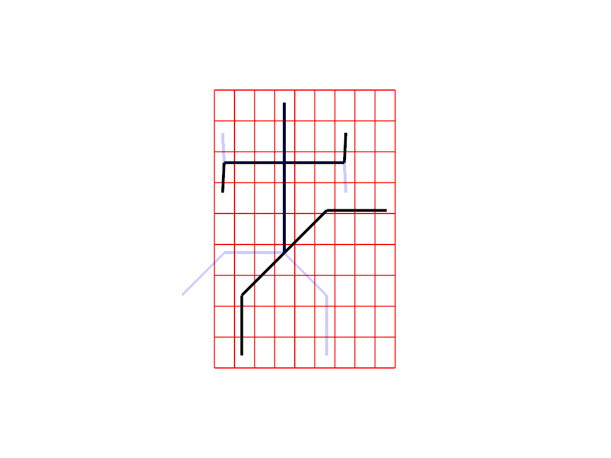
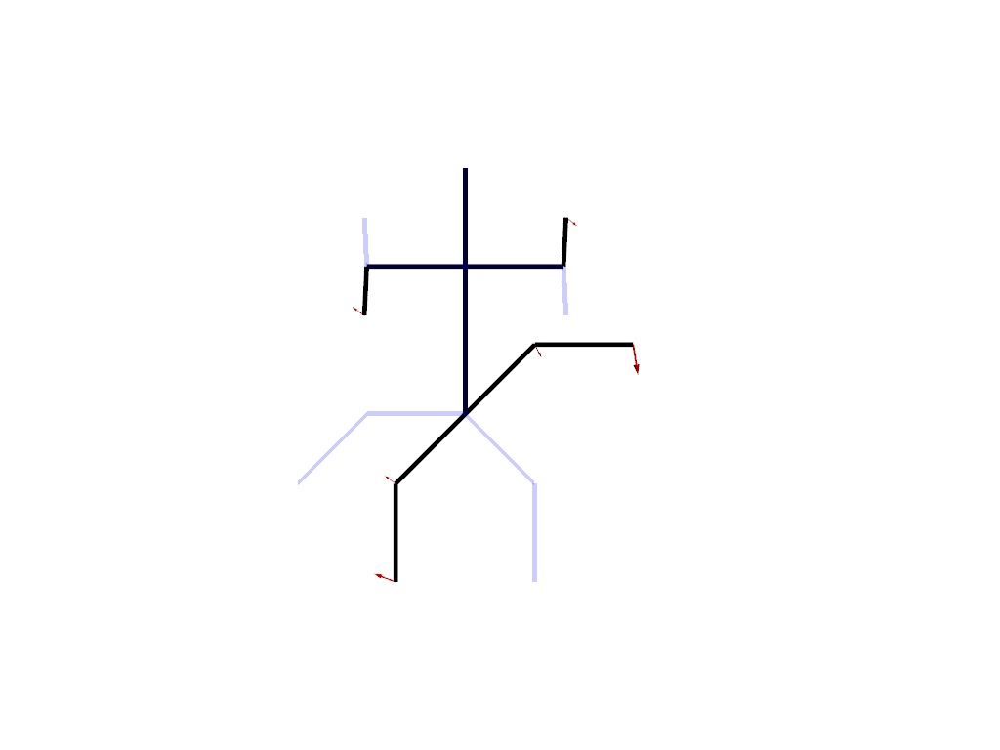

Note
Go to the end to download the full example code
Intrinsic vs Extrinsic deformation#
Intrisic and extrinsic deformations are two different ways to deform a shape. They both are non-rigid deformations and then offer flexibility to the registration process.
This example shows how both approaches differ on a simple 2D example.
Useful imports
import sys
import pykeops
from utils_karateka import (
load_data,
plot_extrinsic_deformation,
plot_intrinsic_deformation,
plot_karatekas,
)
import skshapes as sks
sys.path.append(pykeops.get_build_folder())
kwargs = {
"loss": sks.L2Loss(),
"optimizer": sks.LBFGS(),
"n_iter": 5,
"gpu": False,
"verbose": True,
}
Load the data
source, target = load_data()
plot_karatekas()

Extrinsic deformation#
Extrinsic deformation is a kind of deformation that is transferable from one shape to another. A typical application is to deform a grid of control points around the shape and then deform the shape using an interpolation.
Intituively, you can think that you are twisting a sheet of paper on which the shape is drawn.
source.control_points = source.bounding_grid(N=10, offset=0.05)
model = sks.ExtrinsicDeformation(
n_steps=6,
kernel="gaussian",
scale=1.0,
control_points=True,
)
registration = sks.Registration(model=model, regularization_weight=0.1, **kwargs)
registration.fit(source=source, target=target)
[KeOps] Generating code for Sum_Reduction reduction (with parameters 0) of formula Exp(-Sum((a-b)**2))*c with a=Var(0,2,0), b=Var(1,2,1), c=Var(2,2,1) ... OK
[pyKeOps] Compiling pykeops cpp 554bf64bae module ... OK
[KeOps] Generating code for Sum_Reduction reduction (with parameters 0) of formula (-2*((a-b)*(d|c)))*Exp(-Sum((a-b)**2)) with a=Var(0,2,0), b=Var(1,2,1), c=Var(2,2,1), d=Var(3,2,0) ... OK
[pyKeOps] Compiling pykeops cpp e75d043068 module ... OK
[KeOps] Generating code for Sum_Reduction reduction (with parameters 1) of formula (2*((a-b)*(d|c)))*Exp(-Sum((a-b)**2)) with a=Var(0,2,0), b=Var(1,2,1), c=Var(2,2,1), d=Var(3,2,0) ... OK
[pyKeOps] Compiling pykeops cpp b846ef8180 module ... OK
[KeOps] Generating code for Sum_Reduction reduction (with parameters 1) of formula Exp(-Sum((a-b)**2))*d with a=Var(0,2,0), b=Var(1,2,1), d=Var(3,2,0) ... OK
[pyKeOps] Compiling pykeops cpp 6da5a5de24 module ... OK
Initial loss : 7.33e+00
= 7.33e+00 + 0.1 * 0.00e+00 (fidelity + regularization_weight * regularization)
[KeOps] Generating code for Sum_Reduction reduction (with parameters 0) of formula (-2*((a-b)*(f|d)))*Exp(-Sum((a-b)**2)) with a=Var(0,2,0), b=Var(1,2,1), d=Var(3,2,0), f=Var(5,2,1) ... OK
[pyKeOps] Compiling pykeops cpp ce7fed06c5 module ... OK
[KeOps] Generating code for Sum_Reduction reduction (with parameters 1) of formula (2*((a-b)*(f|d)))*Exp(-Sum((a-b)**2)) with a=Var(0,2,0), b=Var(1,2,1), d=Var(3,2,0), f=Var(5,2,1) ... OK
[pyKeOps] Compiling pykeops cpp 7013428729 module ... OK
[KeOps] Generating code for Sum_Reduction reduction (with parameters 1) of formula Zero(2) with ... OK
[pyKeOps] Compiling pykeops cpp 39c6f0c3ad module ... OK
[KeOps] Generating code for Sum_Reduction reduction (with parameters 0) of formula Exp(-Sum((a-b)**2))*f with a=Var(0,2,0), b=Var(1,2,1), f=Var(5,2,1) ... OK
[pyKeOps] Compiling pykeops cpp b51feb5fd2 module ... OK
[KeOps] Generating code for Sum_Reduction reduction (with parameters 0) of formula (2*((d|c)*f)+-4*((a-b)*((d|c)*((a-b)|f))))*Exp(-Sum((a-b)**2)) with a=Var(0,2,0), b=Var(1,2,1), c=Var(2,2,1), d=Var(3,2,0), f=Var(5,2,1) ... OK
[pyKeOps] Compiling pykeops cpp b85838fd4b module ... OK
[KeOps] Generating code for Sum_Reduction reduction (with parameters 1) of formula (-2*((d|c)*f)+4*((a-b)*((d|c)*((a-b)|f))))*Exp(-Sum((a-b)**2)) with a=Var(0,2,0), b=Var(1,2,1), c=Var(2,2,1), d=Var(3,2,0), f=Var(5,2,1) ... OK
[pyKeOps] Compiling pykeops cpp 4ca5b22d1a module ... OK
[KeOps] Generating code for Sum_Reduction reduction (with parameters 1) of formula (2*((f|(a-b))*d))*Exp(-Sum((a-b)**2)) with a=Var(0,2,0), b=Var(1,2,1), d=Var(3,2,0), f=Var(5,2,1) ... OK
[pyKeOps] Compiling pykeops cpp 8a98e8c7b0 module ... OK
[KeOps] Generating code for Sum_Reduction reduction (with parameters 0) of formula (2*((f|(a-b))*c))*Exp(-Sum((a-b)**2)) with a=Var(0,2,0), b=Var(1,2,1), c=Var(2,2,1), f=Var(5,2,1) ... OK
[pyKeOps] Compiling pykeops cpp 43e23b1cef module ... OK
[KeOps] Generating code for Sum_Reduction reduction (with parameters 0) of formula (-2*((d|c)*f)+4*((a-b)*((d|c)*((a-b)|f))))*Exp(-Sum((a-b)**2)) with a=Var(0,2,0), b=Var(1,2,1), c=Var(2,2,1), d=Var(3,2,0), f=Var(5,2,0) ... OK
[pyKeOps] Compiling pykeops cpp 408fabb925 module ... OK
[KeOps] Generating code for Sum_Reduction reduction (with parameters 1) of formula (2*((d|c)*f)+-4*((a-b)*((d|c)*((a-b)|f))))*Exp(-Sum((a-b)**2)) with a=Var(0,2,0), b=Var(1,2,1), c=Var(2,2,1), d=Var(3,2,0), f=Var(5,2,0) ... OK
[pyKeOps] Compiling pykeops cpp a923c0d8b8 module ... OK
[KeOps] Generating code for Sum_Reduction reduction (with parameters 1) of formula (-2*((f|(a-b))*d))*Exp(-Sum((a-b)**2)) with a=Var(0,2,0), b=Var(1,2,1), d=Var(3,2,0), f=Var(5,2,0) ... OK
[pyKeOps] Compiling pykeops cpp c5bbb98488 module ... OK
[KeOps] Generating code for Sum_Reduction reduction (with parameters 0) of formula (-2*((f|(a-b))*c))*Exp(-Sum((a-b)**2)) with a=Var(0,2,0), b=Var(1,2,1), c=Var(2,2,1), f=Var(5,2,0) ... OK
[pyKeOps] Compiling pykeops cpp fcd7818b5f module ... OK
Loss after 1 iteration(s) : 3.23e+00
= 1.46e+00 + 0.1 * 1.77e+01 (fidelity + regularization_weight * regularization)
Loss after 2 iteration(s) : 3.14e+00
= 1.39e+00 + 0.1 * 1.74e+01 (fidelity + regularization_weight * regularization)
Loss after 3 iteration(s) : 2.83e+00
= 2.54e-01 + 0.1 * 2.58e+01 (fidelity + regularization_weight * regularization)
Loss after 4 iteration(s) : 2.71e+00
= 3.32e-02 + 0.1 * 2.68e+01 (fidelity + regularization_weight * regularization)
Loss after 5 iteration(s) : 2.63e+00
= 2.60e-02 + 0.1 * 2.61e+01 (fidelity + regularization_weight * regularization)
<skshapes.tasks.registration.Registration object at 0x7f1e283e9210>
Visualize the deformation
plot_extrinsic_deformation(
source=source, target=target, registration=registration, animation=True
)

Intrinsic deformation#
An intrinsic deformation is a deformation that is not transferable from one shape to another. It is defined as a sequence of small displacements of the points of the shape. In this setting, you can think of the shape as a puppet that you can deform thanks to a set of strings attached to its vertices.
model = sks.IntrinsicDeformation(
n_steps=8,
)
registration = sks.Registration(model=model, regularization_weight=500, **kwargs)
registration.fit(source=source, target=target)
Initial loss : 7.33e+00
= 7.33e+00 + 500 * 0.00e+00 (fidelity + regularization_weight * regularization)
Loss after 1 iteration(s) : 7.04e-01
= 2.21e-01 + 500 * 9.67e-04 (fidelity + regularization_weight * regularization)
Loss after 2 iteration(s) : 4.39e-01
= 9.37e-02 + 500 * 6.91e-04 (fidelity + regularization_weight * regularization)
Loss after 3 iteration(s) : 4.09e-01
= 4.80e-02 + 500 * 7.22e-04 (fidelity + regularization_weight * regularization)
Loss after 4 iteration(s) : 4.06e-01
= 4.42e-02 + 500 * 7.24e-04 (fidelity + regularization_weight * regularization)
Loss after 5 iteration(s) : 4.05e-01
= 4.50e-02 + 500 * 7.20e-04 (fidelity + regularization_weight * regularization)
<skshapes.tasks.registration.Registration object at 0x7f1e59f88e10>
Visualize the deformation
plot_intrinsic_deformation(
source=source, target=target, registration=registration, animation=True
)

Total running time of the script: (1 minutes 14.047 seconds)